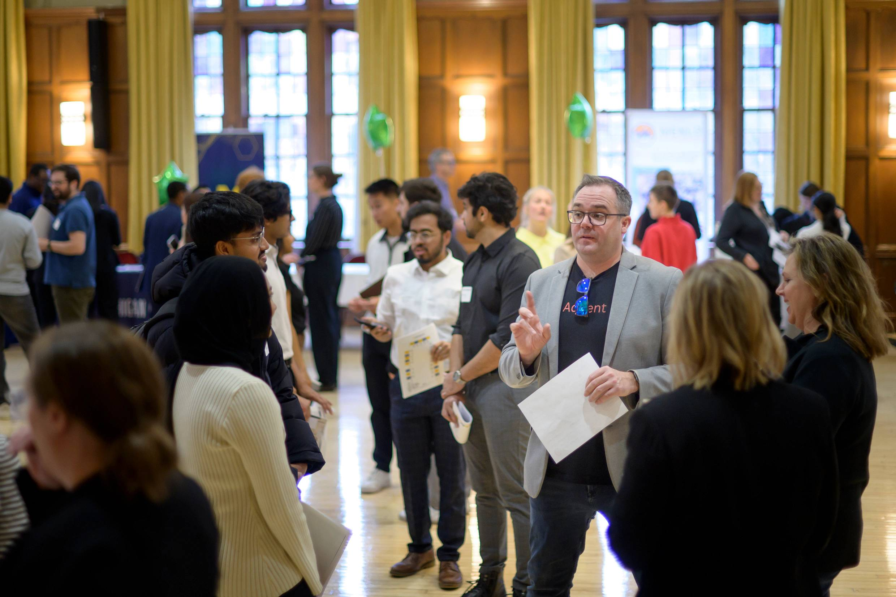

Discover Networking Platforms
Building professional relationships starts with the right tools. The Career Development Office offers several platforms to help you connect. Simply register with your umich credentials to gain access, explore interest groups, and reach out to professionals who share your academic or career interests.
Schedule your first Informational Interview today!
Events & Opportunities

Take advantage of diverse networking events held throughout the year. From career fairs and employer info sessions to student organization mixers, there's something for everyone.
Check out our Career Services calendar for upcoming opportunities, and don't miss out on department-hosted open houses —great places to meet peers and industry leaders in a casual setting. Be prepared with your resume and a quick introduction!
New Updates! Checkout our upcoming events here!
Tips for Effective Networking
Prepare in advance: Research speakers, attendees, or organizations before an event.
Polish your online presence:Update your LinkedIn profile and university networking platform with relevant experiences and interests.
Start with a purpose: Set clear goals for what you want to achieve or who you'd like to meet.
Personalize your outreach: Reference shared interests or backgrounds when contacting someone new.
Practice your introduction: Have a brief summary ready about yourself and what you're seeking.
Be proactive and curious: Ask thoughtful questions and actively listen during conversations.
Follow up: Send a thank you note or message after meeting someone to maintain the connection.
Connect with Alumni & Mentors
The Career Development Office is proud to have a vibrant alumni network eager to give back. Tap into these resources by joining alumni-led events. These connections offer invaluable guidance for academic choices, internships, and long-term career plans. Visit our University Career Alumni Network (UCAN) to learn more about these opportunities.
Additional Resources
- Lettersmith: Support Tool for Professional Communication
- Networking Email Templates from Resume Worded
- LAMP: Building a List for Strategic Networking
- Tips & Tricks for Creating an Elevated Pitch
- Introduction to Networking: How to Make a Connection?
- How to Write an Outreach Email; with Examples!
- Preparing for a Career Fair Workshop Video